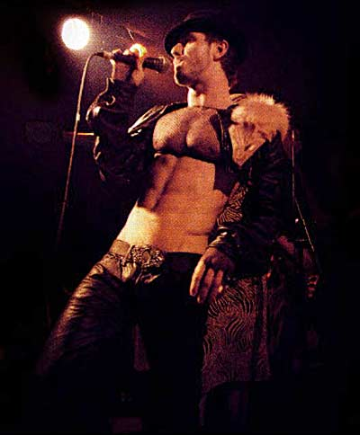

 Scissor Sisters’ 25-årige forsanger, Jake Shears, optrådte i lavtaljede læderbukser, stramt maveskind og ræv, da bandet gav koncert på Rust. Da New York kom til Nørrebro Scissor Sisters hitter stort med deres disco-version af Pink Floyd-nummeret ‘Comfortably Numb’. Derudover gør de ved Elton John og pianopop, hvad The Darkness har gjort ved Queen og puddelhunderock. Art Disco Deres ry er ankommet lang tid før, de fem kunstnere fra Brooklyn er nået til et propfyldt Rust på Nørrebro i sidste uge. Rygtet fortæller om en popgruppe udsprunget af et bøssemiljø i New York, om at tre af fem bandmedlemmer er bøsser, om multistjernede anmeldelser af debutalbummet ‘Scissor Sisters’, om et bandnavn, der er opkaldt efter lesbisk sex, om koncerter, der vil ændre éns opfattelse af koncert som udtryksform, og om et band, der spiller både Elton John-agtige pianopopnumre, Fischerspooner-electro og dansegulvsmusik med intelligente tekster. Dansegulvet denne torsdag aften ligner ikke en almindelig Rust-aften. Foran scenen danser 10-12 udklædte rundt. Typisk fyre i kjoler og paryk. Andre steder kysser piger med piger, og drenge holder drenge i hånden. Andre flasher bare deres skæve nakkehår, truckerskæg, høje hæle eller holder bare en øl i hånden. Det er en aften med mediefolk, pladebranchefolk og specielt indbudte. Mange musikere – fra Popstars-Jon til Sort Sol – reklamefolk, dj’s og clubbingfolk. Klokken 21.22 går de fem Scissor Sisters på scenen. Fire fyre og en pige. Den 25-årige forsanger, Jake Shears, i lavtaljede læderbukser, stramt maveskind, en minimal gennemsigtig top og ræv på skulderen, sætter i med den fremragende ‘Take Your Mama’, der handler om at vise ens familie, at man er homoseksuel, i stedet for at sige det. Vise det ved at tage mor ud og drikke hende fuld i bøssemiljøet. Show it, don’t tell it. »En skål til alle Jer, der har klædt Jer ud. Tak! I ser bedre ud end mig. Så faktisk: Fuck Jer! Hvordan vover I,« siger sangerinden Ana Matronic kostbart før de 70’er-pianoagtige numre ‘Better Luck’ og den første single ,‘Laura’, med linien ‘I gotta give myself one more chance to be the man I know I am’. Det hårde miljø i New York |
||
|
Print denne side |